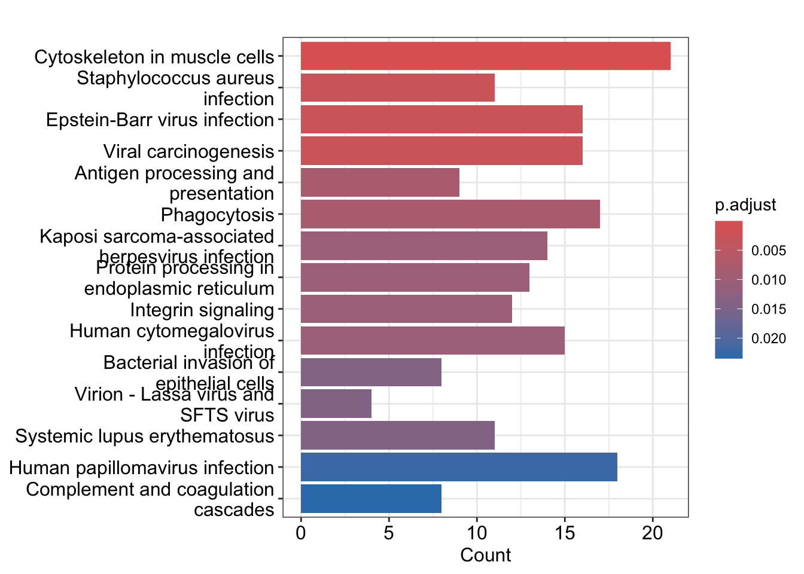
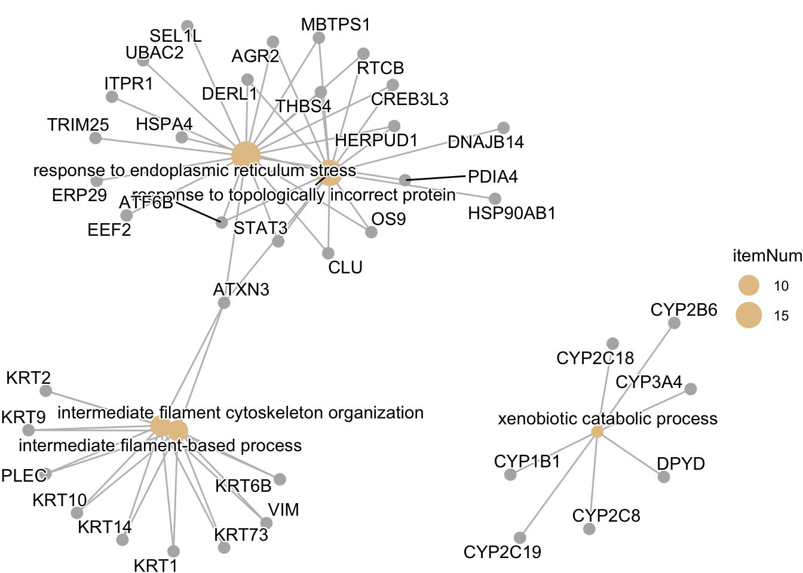

# Install Bioconductor
# # 1. Make sure BiocManager itself is installed and current
# if (!requireNamespace("BiocManager", quietly = TRUE))
# install.packages("BiocManager")
#
# # update bioconductor manager
# BiocManager::install(update = TRUE, ask = FALSE)
#
# # 2. Install the two packages
# BiocManager::install(c("clusterProfiler", "org.Hs.eg.db"))Final Report: Looking for COVID Pieces in Plasma
Overview
Schematic
- Process and purify soluble HLA class I using immunoaffinity purification
- Fractionate using HP/LC
- Run on TOF Mass Spec
- Use mass spec analysis software to obtain peptide sequences, source proteins, and genes
- Perform analysis

# load libraries
#| code-fold: true
#| echo: false
#| error: false
#| message: false
library(tidyverse)── Attaching core tidyverse packages ──────────────────────── tidyverse 2.0.0 ──
✔ dplyr 1.2.1 ✔ readr 2.2.0
✔ forcats 1.0.1 ✔ stringr 1.6.0
✔ ggplot2 4.0.3 ✔ tibble 3.3.1
✔ lubridate 1.9.5 ✔ tidyr 1.3.2
✔ purrr 1.2.2
── Conflicts ────────────────────────────────────────── tidyverse_conflicts() ──
✖ dplyr::filter() masks stats::filter()
✖ dplyr::lag() masks stats::lag()
ℹ Use the conflicted package (<http://conflicted.r-lib.org/>) to force all conflicts to become errorslibrary(cowplot)
Attaching package: 'cowplot'
The following object is masked from 'package:lubridate':
stamplibrary(stringr)
library(gprofiler2)
library(enrichR)Welcome to enrichR
Checking connections ...
Enrichr ... Connection is Live!
FlyEnrichr ... Connection is Live!
WormEnrichr ... Connection is Live!
YeastEnrichr ... Connection is Live!
FishEnrichr ... Connection is Live!
OxEnrichr ... Connection is Live!Get CSV Output from Mass Spec
# read in df
peptides <- read.csv("data/peptideDb.peptides.csv")
# glimpse df
glimpse(peptides)Rows: 2,093
Columns: 28
$ Peptide <chr> "A(+42.01)ANVTPADYAEWSK", "A(+42.01)ARPRDAL", "A…
$ X.10LgP <dbl> 34.33, 24.95, 32.73, 34.15, 34.73, 27.77, 32.36,…
$ Mass <dbl> 1563.7205, 910.4984, 1010.6012, 1463.6544, 1962.…
$ Tag.Length <int> 14, 8, 10, 14, 17, 15, 17, 16, 16, 13, 13, 13, 1…
$ CAA.... <dbl> 35.7, 37.5, 40.0, 28.6, 47.1, 46.7, 47.1, 62.5, …
$ Length <int> 14, 8, 10, 14, 17, 15, 17, 16, 16, 13, 13, 13, 1…
$ Delta.RT <chr> "-11.9480", "17.5813", "-77.7874", "8.5478", "-1…
$ MS2.Correlation <dbl> 0.47, 0.10, 0.26, 0.41, 0.44, 0.68, 0.26, 0.04, …
$ ppm <dbl> -5.5, -2.0, 0.4, 1.8, 6.6, 0.3, -1.4, -8.9, 12.7…
$ m.z <dbl> 782.8632, 456.2556, 506.3080, 732.8373, 982.4172…
$ z <int> 2, 2, 2, 2, 2, 2, 2, 2, 3, 2, 2, 2, 2, 2, 2, 2, …
$ RT <dbl> 55.0110, 41.8248, 51.8708, 48.9945, 50.2847, 49.…
$ Area.Sample.1 <dbl> 306, NA, NA, 3180, 514, 518, 145, 5190, 1890, 69…
$ Intensity.Sample.1 <dbl> 1760, NA, NA, 14100, 4020, 4130, 760, 26600, 105…
$ Scan <int> 8569, 7615, 9622, 9244, 8495, 9448, 10047, 10860…
$ Source.File <chr> "260717_1008_W632_070626_Fxn12.wiff", "260717_10…
$ X.Spec <int> 1, 1, 3, 22, 7, 9, 4, 17, 7, 9, 103, 2, 4, 2, 3,…
$ X.Spec.Sample.1 <int> 1, 1, 3, 22, 7, 9, 4, 17, 7, 9, 103, 2, 4, 2, 3,…
$ X.Feature <int> 1, 0, 0, 8, 2, 1, 1, 4, 5, 5, 31, 2, 1, 2, 3, 0,…
$ X.Feature.Sample.1 <int> 1, 0, 0, 8, 2, 1, 1, 4, 5, 5, 31, 2, 1, 2, 3, 0,…
$ Accession <chr> "Biognosys|iRT-Kit_peptide_10:Q14517|FAT1_HUMAN"…
$ Gene <chr> "FAT1", "DNAAF5", "SCRIB", "", "", "", "", "SIGL…
$ Database <chr> "TARGET", "TARGET", "TARGET", "TARGET", "TARGET"…
$ PTM <chr> "Acetylation (N-term)", "Acetylation (N-term)", …
$ AScore <chr> "A1:Acetylation (N-term):1000.00", "A1:Acetylati…
$ Positional.Confidence <chr> "0 0 0 33 19 3 2 2 0 0 0 0 0 0", "0 0 0 0 0 7 7 …
$ tag...0.0.. <chr> "A(+42.01)ANVTPADYAEWSK", "A(+42.01)ARPRDAL", "A…
$ Found.By <chr> "DeepNovo", "DB Search", "DB Search", "DeepNovo"…Clean the Data
Peptide Length Area.Sample.1 Intensity.Sample.1
1 AARPRDAL 8 NA NA
2 AAFEKQVL 8 1310 10600
3 APLLRWVL 8 9660 50800
4 APNLKSQL 8 2510 11900
5 DAVVKHVL 8 NA NA
6 DLGKKIAL 8 3690 20200
Source.File Accession Gene Found.By
1 260717_1008_W632_070626_Fxn19.wiff Q86Y56|DAAF5_HUMAN DNAAF5 DB Search
2 260717_1008_W632_070626_Fxn18.wiff Q9P2E9|RRBP1_HUMAN RRBP1 DB Search
3 260717_1008_W632_070626_Fxn26.wiff P09601|HMOX1_HUMAN HMOX1 DB Search
4 260717_1008_W632_070626_Fxn17.wiff Q9Y490|TLN1_HUMAN TLN1 DB Search
5 260717_1008_W632_070626_Fxn16.wiff P53621|COPA_HUMAN COPA DB Search
6 260717_1008_W632_070626_Fxn18.wiff O94979|SC31A_HUMAN SEC31A DB Search
accession_clean
1 Q86Y56
2 Q9P2E9
3 P09601
4 Q9Y490
5 P53621
6 O94979Visualize Peptide Distribution Based on Length

Visualize Peptide Distribution based on Fraction

Check for COVID-19 Peptides
# check for any accession value that does not contain human
non_human <- pep_clean |> filter(!str_detect(Accession, "HUMAN"))
non_human[1] Peptide Length Area.Sample.1 Intensity.Sample.1
[5] Source.File Accession Gene Found.By
[9] accession_clean
<0 rows> (or 0-length row.names)- We weren’t able to identify any COVID-19 peptides from our extraction.
Identify 10 Most Abundant Peptides Overall Based on Peak Area
# select for top genes based on sample area
top_area_genes <- pep_clean |>
select(Gene,accession_clean,Area.Sample.1) |>
arrange(desc(Area.Sample.1))
genes <- top_area_genes$Gene
# get pathway from API for Gene column using gprofiler
gostres <- gost(query = genes,
organism = "hsapiens",
sources = c("GO:BP", "GO:MF", "GO:CC", "KEGG", "REAC"))
# use enrichR
dbs <- c("GO_Biological_Process_2023", "KEGG_2021_Human", "Reactome_2022")
enriched <- enrichr(top_area_genes$Gene, dbs)Uploading data to Enrichr... Done.
Querying GO_Biological_Process_2023... Done.
Querying KEGG_2021_Human... Done.
Querying Reactome_2022... Done.
Parsing results... Done.enriched$GO_Biological_Process_2023$Term[1:10] [1] "Cellular Component Assembly (GO:0022607)"
[2] "Regulation Of Transcription By RNA Polymerase I (GO:0006356)"
[3] "Negative Regulation Of Cholesterol Transport (GO:0032375)"
[4] "Protein Transport (GO:0015031)"
[5] "Negative Regulation Of Lipid Metabolic Process (GO:0045833)"
[6] "Response To Calcium Ion (GO:0051592)"
[7] "Endoplasmic Reticulum To Cytosol Transport (GO:1903513)"
[8] "Response To Metal Ion (GO:0010038)"
[9] "Supramolecular Fiber Organization (GO:0097435)"
[10] "Negative Regulation Of Amyloid-Beta Formation (GO:1902430)" Identify 10 Peptides with Highest Intensity Peaks
# select genes based on intensity
top_intensity_genes <- pep_clean |>
select(Gene, accession_clean,Intensity.Sample.1) |>
arrange(desc(Intensity.Sample.1))
genes <- top_area_genes$Gene
# get pathway from API for Gene column using gprofiler
gostres <- gost(query = genes,
organism = "hsapiens",
sources = c("GO:BP", "GO:MF", "GO:CC", "KEGG", "REAC"))
# use enrichR
dbs <- c("GO_Biological_Process_2023", "KEGG_2021_Human", "Reactome_2022")
enriched <- enrichr(top_area_genes$Gene, dbs)Uploading data to Enrichr... Done.
Querying GO_Biological_Process_2023... Done.
Querying KEGG_2021_Human... Done.
Querying Reactome_2022... Done.
Parsing results... Done.enriched$GO_Biological_Process_2023$Term[1:30] [1] "Cellular Component Assembly (GO:0022607)"
[2] "Regulation Of Transcription By RNA Polymerase I (GO:0006356)"
[3] "Negative Regulation Of Cholesterol Transport (GO:0032375)"
[4] "Protein Transport (GO:0015031)"
[5] "Negative Regulation Of Lipid Metabolic Process (GO:0045833)"
[6] "Response To Calcium Ion (GO:0051592)"
[7] "Endoplasmic Reticulum To Cytosol Transport (GO:1903513)"
[8] "Response To Metal Ion (GO:0010038)"
[9] "Supramolecular Fiber Organization (GO:0097435)"
[10] "Negative Regulation Of Amyloid-Beta Formation (GO:1902430)"
[11] "Regulation Of Vasculature Development (GO:1901342)"
[12] "Response To Endoplasmic Reticulum Stress (GO:0034976)"
[13] "Retrograde Protein Transport, ER To Cytosol (GO:0030970)"
[14] "Epoxygenase P450 Pathway (GO:0019373)"
[15] "Muscle Cell Development (GO:0055001)"
[16] "Ubiquitin-Dependent Protein Catabolic Process (GO:0006511)"
[17] "Negative Regulation Of Amyloid Precursor Protein Catabolic Process (GO:1902992)"
[18] "Regulation Of Substrate Adhesion-Dependent Cell Spreading (GO:1900024)"
[19] "Cholesterol Transport (GO:0030301)"
[20] "Receptor Internalization (GO:0031623)"
[21] "Regulation Of Amyloid-Beta Formation (GO:1902003)"
[22] "Macrophage Activation (GO:0042116)"
[23] "Platelet Aggregation (GO:0070527)"
[24] "Long-Chain Fatty Acid Metabolic Process (GO:0001676)"
[25] "Chaperone-Mediated Protein Complex Assembly (GO:0051131)"
[26] "Regulation Of Receptor-Mediated Endocytosis (GO:0048259)"
[27] "Very-Low-Density Lipoprotein Particle Assembly (GO:0034379)"
[28] "Omega-Hydroxylase P450 Pathway (GO:0097267)"
[29] "Stress Granule Assembly (GO:0034063)"
[30] "Protein Exit From Endoplasmic Reticulum (GO:0032527)" Try with clusterProfiler
# load libraries
library(clusterProfiler)clusterProfiler v4.20.0 Learn more at https://yulab-smu.top/contribution-knowledge-mining/
Please cite:
Guangchuang Yu, Li-Gen Wang, Yanyan Han and Qing-Yu He.
clusterProfiler: an R package for comparing biological themes among
gene clusters. OMICS: A Journal of Integrative Biology. 2012,
16(5):284-287
Attaching package: 'clusterProfiler'The following object is masked from 'package:purrr':
simplifyThe following object is masked from 'package:stats':
filterlibrary(org.Hs.eg.db) Loading required package: AnnotationDbiLoading required package: stats4Loading required package: BiocGenericsLoading required package: generics
Attaching package: 'generics'The following object is masked from 'package:lubridate':
as.difftimeThe following object is masked from 'package:dplyr':
explainThe following objects are masked from 'package:base':
as.difftime, as.factor, as.ordered, intersect, is.element, setdiff,
setequal, union
Attaching package: 'BiocGenerics'The following object is masked from 'package:dplyr':
combineThe following objects are masked from 'package:stats':
IQR, mad, sd, var, xtabsThe following objects are masked from 'package:base':
anyDuplicated, aperm, append, as.data.frame, basename, cbind,
colnames, dirname, do.call, duplicated, eval, evalq, Filter, Find,
get, grep, grepl, is.unsorted, lapply, Map, mapply, match, mget,
order, paste, pmax, pmax.int, pmin, pmin.int, Position, rank,
rbind, Reduce, rownames, sapply, saveRDS, table, tapply, unique,
unsplit, which.max, which.minLoading required package: BiobaseWelcome to Bioconductor
Vignettes contain introductory material; view with
'browseVignettes()'. To cite Bioconductor, see
'citation("Biobase")', and for packages 'citation("pkgname")'.Loading required package: IRangesLoading required package: S4Vectors
Attaching package: 'S4Vectors'The following object is masked from 'package:clusterProfiler':
renameThe following objects are masked from 'package:lubridate':
second, second<-The following objects are masked from 'package:dplyr':
first, renameThe following object is masked from 'package:tidyr':
expandThe following object is masked from 'package:utils':
findMatchesThe following objects are masked from 'package:base':
expand.grid, I, unname
Attaching package: 'IRanges'The following object is masked from 'package:clusterProfiler':
sliceThe following object is masked from 'package:lubridate':
%within%The following objects are masked from 'package:dplyr':
collapse, desc, sliceThe following object is masked from 'package:purrr':
reduce
Attaching package: 'AnnotationDbi'The following object is masked from 'package:clusterProfiler':
selectThe following object is masked from 'package:dplyr':
selectlibrary(AnnotationDbi)
library(ReactomePA)ReactomePA v1.56.0 Learn more at https://yulab-smu.top/contribution-knowledge-mining/
Please cite:
Guangchuang Yu, Qing-Yu He. ReactomePA: an R/Bioconductor package for
reactome pathway analysis and visualization. Molecular BioSystems.
2016, 12(2):477-479library(enrichplot)enrichplot v1.32.0 Learn more at https://yulab-smu.top/contribution-knowledge-mining/
Please cite:
Guangchuang Yu. Using meshes for MeSH term enrichment and semantic
analyses. Bioinformatics. 2018, 34(21):3766-3767,
doi:10.1093/bioinformatics/bty410uniprot_ids <- top_area_genes$accession_clean
# convert to entrez ids
id_map <- bitr(uniprot_ids,
fromType = "UNIPROT",
toType = c("SYMBOL", "ENTREZID"),
OrgDb = org.Hs.eg.db)'select()' returned 1:many mapping between keys and columnsWarning in bitr(uniprot_ids, fromType = "UNIPROT", toType = c("SYMBOL", : 2.7%
of input gene IDs are fail to map...# run enrichmnet analysis
go_enrich <- enrichGO(gene = id_map$ENTREZID,
OrgDb = org.Hs.eg.db,
keyType = "ENTREZID",
ont = "BP", # "BP", "MF", "CC", or "ALL"
pAdjustMethod = "BH",
pvalueCutoff = 0.05,
qvalueCutoff = 0.2,
readable = TRUE) # converts back to symbols in output
head(as.data.frame(go_enrich)) ID
GO:0035966 GO:0035966
GO:0034976 GO:0034976
GO:0042178 GO:0042178
GO:0045104 GO:0045104
GO:0045103 GO:0045103
GO:0002478 GO:0002478
Description
GO:0035966 response to topologically incorrect protein
GO:0034976 response to endoplasmic reticulum stress
GO:0042178 xenobiotic catabolic process
GO:0045104 intermediate filament cytoskeleton organization
GO:0045103 intermediate filament-based process
GO:0002478 antigen processing and presentation of exogenous peptide antigen
GeneRatio BgRatio RichFactor FoldEnrichment zScore pvalue
GO:0035966 15/316 161/18842 0.09316770 5.555272 7.581093 9.151749e-08
GO:0034976 19/316 269/18842 0.07063197 4.211543 6.928728 1.538684e-07
GO:0042178 7/316 30/18842 0.23333333 13.912869 9.244227 5.104498e-07
GO:0045104 10/316 89/18842 0.11235955 6.699616 7.038983 2.407436e-06
GO:0045103 10/316 90/18842 0.11111111 6.625176 6.986155 2.668638e-06
GO:0002478 7/316 39/18842 0.17948718 10.702207 7.921254 3.388299e-06
p.adjust qvalue
GO:0035966 0.0002738857 2.403688e-05
GO:0034976 0.0002738857 2.403688e-05
GO:0042178 0.0006057337 5.316067e-05
GO:0045104 0.0019000701 1.667548e-04
GO:0045103 0.0019000701 1.667548e-04
GO:0002478 0.0020103904 1.764368e-04
geneID
GO:0035966 THBS4/RTCB/CLU/HSP90AB1/MBTPS1/DERL1/ATF6B/AGR2/STAT3/ATXN3/CREB3L3/HSPA4/DNAJB14/OS9/HERPUD1
GO:0034976 THBS4/RTCB/CLU/ERP29/PDIA4/UBAC2/MBTPS1/DERL1/SEL1L/ATF6B/AGR2/STAT3/ATXN3/CREB3L3/ITPR1/OS9/EEF2/TRIM25/HERPUD1
GO:0042178 CYP3A4/CYP1B1/CYP2C8/CYP2C19/DPYD/CYP2B6/CYP2C18
GO:0045104 KRT1/KRT14/KRT6B/KRT73/KRT2/ATXN3/VIM/KRT9/KRT10/PLEC
GO:0045103 KRT1/KRT14/KRT6B/KRT73/KRT2/ATXN3/VIM/KRT9/KRT10/PLEC
GO:0002478 HLA-DRB5/HLA-B/DNM2/HLA-A/HLA-C/LGMN/HLA-DPB1
Count
GO:0035966 15
GO:0034976 19
GO:0042178 7
GO:0045104 10
GO:0045103 10
GO:0002478 7# run KEGG pathway analysis
kegg_enrich <- enrichKEGG(gene = id_map$ENTREZID,
organism = "hsa",
pvalueCutoff = 0.05)Reading KEGG annotation online: "https://rest.kegg.jp/link/hsa/pathway"...Reading KEGG annotation online: "https://rest.kegg.jp/list/pathway/hsa"...head(as.data.frame(kegg_enrich)) category subcategory ID
hsa04820 Cellular Processes Cell motility hsa04820
hsa05150 Human Diseases Infectious disease: bacterial hsa05150
hsa05169 Human Diseases Infectious disease: viral hsa05169
hsa05203 Human Diseases Cancer: overview hsa05203
hsa04612 Organismal Systems Immune system hsa04612
hsa04145 Cellular Processes Transport and catabolism hsa04145
Description GeneRatio BgRatio RichFactor
hsa04820 Cytoskeleton in muscle cells 21/226 233/9420 0.09012876
hsa05150 Staphylococcus aureus infection 11/226 99/9420 0.11111111
hsa05169 Epstein-Barr virus infection 16/226 205/9420 0.07804878
hsa05203 Viral carcinogenesis 16/226 205/9420 0.07804878
hsa04612 Antigen processing and presentation 9/226 82/9420 0.10975610
hsa04145 Phagocytosis 17/226 260/9420 0.06538462
FoldEnrichment zScore pvalue p.adjust qvalue
hsa04820 3.756694 6.680117 1.696835e-07 4.886885e-05 2.592281e-05
hsa05150 4.631268 5.694414 2.342564e-05 2.337286e-03 1.239829e-03
hsa05169 3.253184 5.113641 3.246230e-05 2.337286e-03 1.239829e-03
hsa05203 3.253184 5.113641 3.246230e-05 2.337286e-03 1.239829e-03
hsa04612 4.574790 5.097237 1.437256e-04 8.085900e-03 4.289220e-03
hsa04145 2.725323 4.422968 1.684562e-04 8.085900e-03 4.289220e-03
geneID
hsa04820 7060/25777/79784/7094/6385/7273/4627/6709/23345/4629/6711/1287/23002/4633/2006/3675/2023/6645/633/7431/5339
hsa05150 3127/712/714/3861/720/718/2266/6404/3857/3858/3115
hsa05169 1021/3661/3127/3280/3065/6772/3106/6774/6890/3105/9612/3107/7431/3115/896/5710
hsa05203 10014/81/1021/3661/3065/3106/718/1388/8345/6774/23513/3105/84699/3107/8348/896
hsa04612 3127/3326/3106/6890/3105/3107/3308/5641/3115
hsa04145 7060/3127/9146/213/3106/1785/10383/718/527/83658/81027/526/1778/6890/3105/3107/3115
Count
hsa04820 21
hsa05150 11
hsa05169 16
hsa05203 16
hsa04612 9
hsa04145 17# run reactome analysis
reactome_enrich <- enrichPathway(gene = id_map$ENTREZID,
organism = "human",
pvalueCutoff = 0.05,
readable = TRUE)
dotplot(go_enrich, showCategory = 15)
barplot(kegg_enrich, showCategory = 15)
cnetplot(go_enrich, showCategory = 5)
Conclusions
- Originally ~2000 peptides were identified, but upon filtering them down